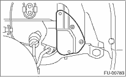
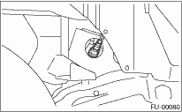

1. Set the vehicle on a lift.
2. Disconnect the ground cable from the battery.

3. Disconnect the connector from front oxygen (A/F) sensor.

4. Disconnect the engine harness fixed by clip (A) from the bracket (B).

5. Remove the front right side wheel.
6. Lift up the vehicle.
7. Remove the service hole cover.

8. Apply spray-type lubricant or equivalent product to the threaded portion of front oxygen (A/F) sensor, and leave it for one minute or more.
9. Remove the front oxygen (A/F) sensor.
CAUTION:
When removing the oxygen (A/F) sensor, wait until exhaust pipe cools, otherwise it will damage the exhaust pipe.
